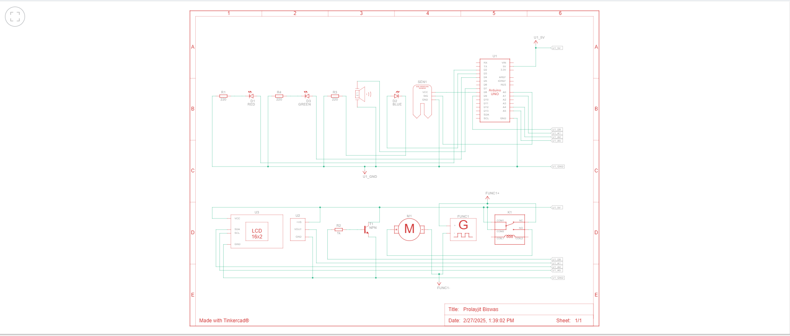

Smart Agricultural Monitoring
üìÖ Post Date: February 23, 2025
üå± Key Concept
The Smart Agriculture Monitoring System is an IoT-based project that integrates Arduino Uno with various sensors and components to monitor and control agricultural conditions in real-time. The system collects environmental data, processes it, and provides alerts or automated actions to optimize farming operations.
üîß Components Required
- Arduino Uno – Microcontroller that processes sensor data and controls components.
- LED Indicators (Red, Green, Blue) – Indicate different system states.
- Temperature Sensor (TMP36) – Measures the surrounding temperature.
- Buzzer – Provides audible alerts for critical conditions.
- LCD Display – Shows real-time sensor readings and status messages.
- Relay Module (SPDT) – Controls a DC motor for automation.
- DC Motor – Simulates an irrigation pump or mechanical farming task.
- Function Generator – Provides signals to test and control the motor.
- IoT Integration – Sends data to the cloud for remote monitoring.
üîå Connections
üìù Wiring Instructions
- Ensure all components are properly grounded.
- Connect power supplies correctly to avoid short circuits.
- Follow the pin mapping carefully.
1️⃣ Arduino Uno (U1) Connections
- 5V → VCC of LCD, Soil Sensor, Temp Sensor, Relay Module
- GND → GND of all components
- D3 → Red LED (D1) via 220Ω resistor
- D4 → Green LED (D3) via 220Ω resistor
- D5 → Blue LED (D2) via 220Ω resistor
- D6 → Buzzer (Piezo1)
- D7 → Relay IN (via NPN transistor)
- A0 → Soil Moisture Sensor Output
- A1 → Temperature Sensor Output
- A4 → LCD SDA (I2C)
- A5 → LCD SCL (I2C)
2️⃣ Soil Moisture Sensor (SEN1)
- VCC → Arduino 5V
- GND → Arduino GND
- OUT → Arduino A0
3️⃣ Temperature Sensor (TMP36)
- VCC → Arduino 5V
- GND → Arduino GND
- VOUT → Arduino A1
4️⃣ LDR (Light Sensor)
- VCC → Arduino 5V
- GND → Arduino GND
- OUT → Arduino A2
5️⃣ Humidity Sensor (DHT11)
- VCC → Arduino 5V
- GND → Arduino GND
- OUT → Arduino D8
6️⃣ Relay Module
- VCC → Arduino 5V
- GND → Arduino GND
- IN → Arduino D7 via NPN transistor
7️⃣ Buzzer (Piezo1)
- + (Anode) → Arduino D6
- - (Cathode) → Arduino GND
8️⃣ DC Motor (Pump - M1)
- VCC → Relay COM
- GND → Arduino GND
- Input → Relay NO
üìú Circuit Diagram
üîç Prototype Overview

×

Arduino Code
Find the complete source code on GitHub:
View on GitHub
#include < DHT.h>
// Define sensor pins
#define DHTPIN 12 // DHT sensor data pin
#define DHTTYPE DHT11 // DHT sensor type
#define LDR_PIN A0 // LDR sensor analog pin
#define SOIL_SENSOR A1 // Soil moisture sensor analog pin
#define RELAY_PIN 13 // Relay for Motor control (Pump)
#define BUZZER 9 // Buzzer pin
// LED Indicators
#define RED_LED 3 // Dry Soil
#define GREEN_LED 4 // Moderate Moisture
#define YELLOW_LED 5 // Wet Soil
#define TEMP_LED 6 // High Temperature
#define LIGHT_LED 7 // Light Condition
DHT dht(DHTPIN, DHTTYPE);
void setup() {
Serial.begin(9600);
dht.begin();
pinMode(LDR_PIN, INPUT);
pinMode(SOIL_SENSOR, INPUT);
pinMode(RELAY_PIN, OUTPUT);
pinMode(BUZZER, OUTPUT);
pinMode(RED_LED, OUTPUT);
pinMode(YELLOW_LED, OUTPUT);
pinMode(GREEN_LED, OUTPUT);
pinMode(TEMP_LED, OUTPUT);
pinMode(LIGHT_LED, OUTPUT);
digitalWrite(RELAY_PIN, HIGH); // Relay OFF initially (Active LOW)
}
void loop() {
float temp = dht.readTemperature();
float humidity = dht.readHumidity();
if (isnan(temp) || isnan(humidity)) {
Serial.println("DHT sensor error!");
return;
}
int lightValue = analogRead(LDR_PIN);
int soilValue = 1023 - analogRead(SOIL_SENSOR);
Serial.print("Temp: "); Serial.print(temp);
Serial.print("C Humidity: "); Serial.print(humidity);
Serial.print("% Light: "); Serial.print(lightValue);
Serial.print(" Soil Moisture: "); Serial.println(soilValue);
// Soil Moisture Control
if (soilValue < 300) {
digitalWrite(RED_LED, HIGH);
digitalWrite(YELLOW_LED, LOW);
digitalWrite(GREEN_LED, LOW);
digitalWrite(RELAY_PIN, HIGH);
digitalWrite(BUZZER, HIGH);
delay(500);
digitalWrite(BUZZER, LOW);
}
else if (soilValue < 700) {
digitalWrite(RED_LED, LOW);
digitalWrite(GREEN_LED, HIGH);
digitalWrite(YELLOW_LED, LOW);
digitalWrite(RELAY_PIN, LOW);
}
else {
digitalWrite(RED_LED, LOW);
digitalWrite(GREEN_LED, LOW);
digitalWrite(YELLOW_LED, HIGH);
digitalWrite(RELAY_PIN, LOW);
tone(BUZZER, 2050);
delay(500);
noTone(BUZZER);
}
// Temperature Alert
if (temp > 35) {
digitalWrite(TEMP_LED, HIGH);
digitalWrite(BUZZER, HIGH);
delay(500);
digitalWrite(BUZZER, LOW);
} else {
digitalWrite(TEMP_LED, LOW);
}
// Light Condition
digitalWrite(LIGHT_LED, lightValue > 800 ? LOW : HIGH);
delay(2000);
}
üé• Simulation Model
üîß Working Prototype
üìä Serial Monitor Data
Featured LinkedIn Post
Check out this latest update from LinkedIn!